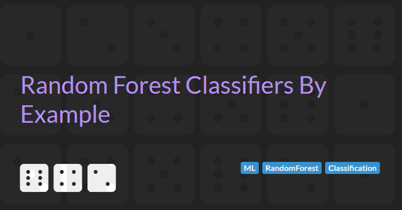

Random Forest Classifiers By Example
Random forests build on the simplicity of decision trees to create a more powerful and robust classification algorithm. They are widely used for classification tasks where accuracy and generalization are important, such as predicting customer churn or detecting fraud.
In this article, we will explore how SciKit Learn's Random Forests can improve classification by combining many decision trees to predict survivors of the Titanic. As part of this journey we will examine additional features of the Titanic dataset and their predictive power, we will look at feature importance, and we will end with a discussion on handling missing data (and whether it is needed for Random Forests).
This is the second article in the series "ML by Example". In my previous article, Decision Tree Classifiers By Example, I covered topics like the Titanic dataset, one-hot encoding, and train/test splits in detail. To avoid repetition, I will skip most of those details here. Please refer to that article if you want a deeper explanation.
How Random Forests Work
A random forest is essentially a "forest" of decision trees that work together.
- Instead of relying on a single decision tree, it builds many trees during training.
- Each tree is trained on a different random subset of the data and features.
- When making a prediction, every tree in the forest votes for a class.
- The forest chooses the class with the most votes as the final prediction.
This approach helps overcome limitations of individual trees, such as overfitting or being overly sensitive to noise.
By averaging the predictions of many diverse trees, random forests tend to be more accurate and robust, while still retaining the interpretability and structure of decision trees at the individual tree level.
Python Prerequisites
Let's install and import the prerequisites so they are ready to use.
# %pip install --quiet --upgrade pip
# %pip install numpy --quiet
# %pip install PyArrow --quiet
# %pip install Pandas --quiet
# %pip install scikit-learn --quietimport numpy as np
import pandas as pd
from sklearn.model_selection import train_test_split
from sklearn.metrics import accuracy_score
from sklearn.ensemble import RandomForestClassifier
from sklearn import treetitanic_data = pd.read_csv("Data/titanic_train.csv")And let's redefine our one-hot encoding utility function:
def onehot_encode(df : pd.DataFrame, column_name: str) -> tuple[pd.DataFrame, list[str]]:
categories = [f"{column_name}_{value}" for value in df[column_name].unique()]
# remove the categorical variables (if we previous called onehot_encode)
df = df.drop(categories, axis=1, errors="ignore")
temp_column_name = f"{column_name}_Temp"
# get_dummies will remove the original column, so copy the data to temp column
df[temp_column_name] = df[column_name]
df = pd.get_dummies(df, prefix=column_name, columns=[temp_column_name], dtype=float)
return df, categoriesPredicting Survivors
Let's define a utility function we can use to train and evaluate the RandomForestClassifier.
def train_and_evaluate_model(data: pd.DataFrame, base_predictors: list[str]) -> None:
"""Trains the model and evaluates it on the validation data."""
data, gender_categories = onehot_encode(data, "Sex")
data, class_categories = onehot_encode(data, "Pclass")
predictors = base_predictors + gender_categories + class_categories
prediction = "Survived"
train, validate = (
train_test_split(
data,
test_size=0.2,
stratify=data[prediction],
random_state=42)
)
x = train[predictors]
y = train[[prediction]].values
random_forest = RandomForestClassifier(n_estimators=100, random_state=42)
random_forest.fit(x, y.ravel())
print(f"Model trained with predictors: {predictors}")
print(f"Feature importances:")
for feature, importance in zip(predictors, random_forest.feature_importances_):
print(f" - {feature}: {importance:.3f}")
print(f"Number of trees: {len(random_forest.estimators_)}")
predictions = random_forest.predict(validate[predictors])
actuals = validate[[prediction]].values
score = accuracy_score(actuals, predictions)
print(f'Model accuracy: {score *100:.2f}%')Following the same hypothesis as we did in Decision Tree Classifiers By Example, we start with a simple prediction using Age, Sex, and Pclass
train_and_evaluate_model(titanic_data, ["Age"])
Model trained with predictors: ['Age', 'Sex_male', 'Sex_female', 'Pclass_3', 'Pclass_1', 'Pclass_2']
Feature importances:
- Age: 0.442
- Sex_male: 0.224
- Sex_female: 0.176
- Pclass_3: 0.081
- Pclass_1: 0.057
- Pclass_2: 0.021
Number of trees: 100
Model accuracy: 81.56%
Great. This is more accurate than our best Decision Tree classifier (which was 80.45%).
The output from the evaluation process also include the feature importance for each of the predictor columns. As it's name suggests, it is a way to measure how important each feature is in making predictions across the entire forest. The higher the number, the more that feature contributes to the model's decisions. The values are normalized to sum to 1, so you can interpret them as fractions of the model's overall "attention."
In the above, Age is the most important feature.
Checking feature importance is useful because it helps you understand how your model is making predictions.
- Feature importance reveals which inputs the model relies on most and provides a way to interpret the models predictions.
- It can also identify unimportant features that can be removed to reducing noise and improve training time, model simplicity, and allow the model to better generalize to new data.
Improving Predictions
Let's see if we can improve our predictions by adding a new feature to our training data.
We might hypothesize that Fare is a proxy for how likely a passenger is to be near a lifeboat given we expect cabins and rooms closer to the top deck to be more expensive than rooms in lower decks.
Let's add Fare as a predictor and see the impact it has on the overall model accuracy.
train_and_evaluate_model(titanic_data, ["Age", "Fare"])Model trained with predictors: ['Age', 'Fare', 'Sex_male', 'Sex_female', 'Pclass_3', 'Pclass_1', 'Pclass_2']
Feature importances:
- Age: 0.288
- Fare: 0.330
- Sex_male: 0.147
- Sex_female: 0.136
- Pclass_3: 0.047
- Pclass_1: 0.035
- Pclass_2: 0.018
Number of trees: 100
Model accuracy: 84.36%
Nice. Adding Fare improves our prediction accuracy by around another 3%.
Interestingly, Fare turns out to have a greater feature importance that Age.
Dealing With Missing Data
So far, we've ignored an important aspect of data engineering - we haven't been dealing with missing data.
If you look at any of the advanced tutorials on Kaggle (such as the Titanic - Advanced Feature Engineering Tutorial) you will see that significant effort is spend identifying and handling missing data.
Let's take a look at the data we've been using so far and identify missing values.
def missing_counts(df: pd.DataFrame) -> pd.DataFrame:
"""Returns a DataFrame with the count of missing values in each column."""
missing = (pd.DataFrame(df.isnull().sum(), columns=["MissingCount"])
.sort_values(by="MissingCount", ascending=False)
.reset_index()
.rename(columns={"index": "ColumnName"}))
return missing[missing["MissingCount"] > 0]
missing_counts(titanic_data)| ColumnName | MissingCount | |
|---|---|---|
| 0 | Cabin | 687 |
| 1 | Age | 177 |
| 2 | Embarked | 2 |
Hmm. OK. We expect Cabin to have some significant missing values as not all passengers will have been able to afford or book a cabin. And we aren't currently using the Embarked column so we don't need to worry about the 2 rows with missing values in this column. But we are using Age and Age has a significant amount of missing data.
Is this affecting the accuracy of our model? What can we do about it?
Imputing Age
Good data engineering practices states we should deal with missing data and one way of doing this is by imputing the values of missing data based on the distribution of values across the data set.
So, how do we impute the Age column?
There are several ways to fill in missing age values. A simple approach is to assign the mean or median age across the entire dataset. However, this often doesn't give the best results.
A better strategy is to group the data by related attributes and compute the average age within each group. For example, passengers in the same class or with similar titles might have similar ages.
To identify which features are related to age, we can use a correlation matrix to explore how Age is associated with other variables in the dataset.
A correlation matrix is a table that shows the relationship between multiple variables in a dataset. Each cell in the matrix represents the correlation coefficient between two variables, which measures how strongly they move together.
- A correlation close to +1 means the two variables increase or decrease together.
- A correlation close to -1 means when one variable increases, the other decreases.
- A correlation near 0 means there is little or no linear relationship.
Correlation matrices help us quickly understand which variables are related and can guide decisions in data analysis, feature selection, and more.
Let's create a correlation matrix to see which other features are strongly correlated with Age.
def create_correlation_matrix(df: pd.DataFrame) -> pd.DataFrame:
"""Returns a DataFrame that is the correlation matrix of the DataFrame df."""
return (df.select_dtypes(include='number')
.corr()
.abs()
.unstack()
.reset_index()
.rename(columns={"level_0": "Feature1", "level_1": "Feature2", 0: "Correlation"}))
matrix = create_correlation_matrix(titanic_data)
matrix[matrix["Feature1"] == "Age"].sort_values(by="Correlation", ascending=False)
| Feature1 | Feature2 | Correlation | |
|---|---|---|---|
| 24 | Age | Age | 1.000000 |
| 23 | Age | Pclass | 0.369226 |
| 25 | Age | SibSp | 0.308247 |
| 26 | Age | Parch | 0.189119 |
| 27 | Age | Fare | 0.096067 |
| 22 | Age | Survived | 0.077221 |
| 21 | Age | PassengerId | 0.036847 |
The correlation matrix shows that Age is most strongly related to Pclass, so one option is to fill missing ages using the mean age within each Pclass. However, we also suspect that males and females in each class may have different average ages. To improve accuracy, we can group by both Pclass and Sex, and use the mean age within each group to impute missing values.
So, first let's define a function to compute an imputation matrix:
def create_mean_imputation_matrix(
df: pd.DataFrame,
for_col: str,
with_grouping: list[str]) -> pd.DataFrame:
"""Returns a DataFrame with the median values of forCol grouped by withGrouping."""
return df.groupby(with_grouping)[for_col].mean().reset_index()
age_impute_matrix = create_mean_imputation_matrix(titanic_data, "Age", ["Pclass", "Sex"])
age_impute_matrix| Pclass | Sex | Age | |
|---|---|---|---|
| 0 | 1 | female | 34.611765 |
| 1 | 1 | male | 41.281386 |
| 2 | 2 | female | 28.722973 |
| 3 | 2 | male | 30.740707 |
| 4 | 3 | female | 21.750000 |
| 5 | 3 | male | 26.507589 |
As suspected males and females in each class have different mean ages with males in 1st class tending to be oldest and females in 3rd class being youngest.
We can now define a function to use this imputation matrix and apply the mean ages in these groups to a data frame.
def apply_imputation_matrix(
df: pd.DataFrame,
imputation_matrix: pd.DataFrame,
for_col: str) -> pd.DataFrame:
"""Applies the imputation matrix to the DataFrame df."""
grouping_columns = imputation_matrix.columns.values.tolist()
grouping_columns.remove(for_col) # type: ignore
df = df.copy()
for _, row in imputation_matrix.iterrows():
condition = (df[grouping_columns] == row[grouping_columns]).all(axis=1)
df.loc[condition & df[for_col].isnull(), for_col] = row[for_col]
return df
But before we apply the function, let's examine some of the passenger data where the passenger's age is unknown (we can then check the imputation has been applied correctly).
missing_passengers = titanic_data[titanic_data["Age"].isnull()]
missing_passengers_ids = missing_passengers["PassengerId"].tolist()
missing_passengers[["PassengerId", "Name", "Sex", "Pclass", "Age"]].head()| PassengerId | Name | Sex | Pclass | Age | |
|---|---|---|---|---|---|
| 5 | 6 | Moran, Mr. James | male | 3 | NaN |
| 17 | 18 | Williams, Mr. Charles Eugene | male | 2 | NaN |
| 19 | 20 | Masselmani, Mrs. Fatima | female | 3 | NaN |
| 26 | 27 | Emir, Mr. Farred Chehab | male | 3 | NaN |
| 28 | 29 | O'Dwyer, Miss. Ellen "Nellie" | female | 3 | NaN |
Right, now let's create a copy of the data frame with imputed ages and verify that the missing data has been replaced.
titanic_data_with_imputed_age = apply_imputation_matrix(titanic_data, age_impute_matrix, "Age")
missing_counts(titanic_data_with_imputed_age)| ColumnName | MissingCount | |
|---|---|---|
| 0 | Cabin | 687 |
| 1 | Embarked | 2 |
Great. No more missing ages. Let's verify that the imputations are what we expect be looking at the updated passenger data.
(titanic_data_with_imputed_age[
titanic_data_with_imputed_age["PassengerId"].isin(missing_passengers_ids)]
[["PassengerId", "Name", "Sex", "Pclass", "Age"]].head())| PassengerId | Name | Sex | Pclass | Age | |
|---|---|---|---|---|---|
| 5 | 6 | Moran, Mr. James | male | 3 | 26.507589 |
| 17 | 18 | Williams, Mr. Charles Eugene | male | 2 | 30.740707 |
| 19 | 20 | Masselmani, Mrs. Fatima | female | 3 | 21.750000 |
| 26 | 27 | Emir, Mr. Farred Chehab | male | 3 | 26.507589 |
| 28 | 29 | O'Dwyer, Miss. Ellen "Nellie" | female | 3 | 21.750000 |
Perfect. Cross-referencing the imputation matrix above with the Sex and Pclass of each passenger we can see our imputation has been applied correct.
New let's retrain the model on the new data and check the accuracy.
train_and_evaluate_model(titanic_data_with_imputed_age, ["Age", "Fare"])Model trained with predictors: ['Age', 'Fare', 'Sex_male', 'Sex_female', 'Pclass_3', 'Pclass_1', 'Pclass_2']
Feature importances:
- Age: 0.290
- Fare: 0.328
- Sex_male: 0.151
- Sex_female: 0.132
- Pclass_3: 0.049
- Pclass_1: 0.033
- Pclass_2: 0.017
Number of trees: 100
Model accuracy: 84.36%
Hmm. Hang on. This model has exactly the same model accuracy as the model without any fancy imputed data.
Why is this?
In version 1.3 SciKit Learn introduced support for missing values in trees.
In fact, in versions prior to 1.3 (release July 2023), attempting to train a DecisionTreeClassifier or RandomForestClassifier on data that contain missing values would throw a ValueError. To train a model in earlier versions you would have to impute or remove any data with missing values.
How SciKit Learn Trees Support Missing Data
The SciKit Learn documentation provides some details how missing data is supported for decision trees (and by extension for random forests that are a collection of trees).
In simple terms, during prediction, if all training data with missing values at a particular split ended up in the same class, then that class will be predicted for new any sample with missing values:
def explain_how_decision_trees_handle_missing_data(features : list[float], labels: list[int]):
X = np.array(features).reshape(-1, 1)
decision_tree = tree.DecisionTreeClassifier(random_state=0).fit(X, labels)
print(tree.export_text(decision_tree, feature_names=["X"]))
prediction = decision_tree.predict(np.array([np.nan]).reshape(-1, 1))
print(f"Prediction for NaN input: {prediction[0]}")
explain_how_decision_trees_handle_missing_data([0, 1, 6, np.nan], [0, 0, 1, 1])
print("Expected 1 for NaN input, since this is the only class label with a NaN value in the data.")|--- X <= 3.50
| |--- class: 0
|--- X > 3.50
| |--- class: 1
Prediction for NaN input: 1
Expected 1 for NaN input, since this is the only class label with a NaN value in the data.
If the split quality (criterion evaluation) is the same for both child nodes, the model breaks the tie for missing values during prediction by defaulting to the right node. During training, the splitter also considers a special case: placing all missing values in one child and all non-missing values in the other to determine if that produces a better split:
explain_how_decision_trees_handle_missing_data([np.nan, -1, np.nan, 1], [0, 0, 1, 1])
print("Expected 1 for NaN input, since the right node predicts a class label of 1.")|--- X <= 0.00
| |--- class: 0
|--- X > 0.00
| |--- class: 1
Prediction for NaN input: 1
Expected 1 for NaN input, since the right node predicts a class label of 1.
If no missing values are seen during training for a given feature, then during prediction missing values are mapped to the child with the most samples:
explain_how_decision_trees_handle_missing_data([1, 2, 3, 4], [0, 1, 1, 1])
print("Expected 1 for NaN input, since we have more 1 labels in the training data.")|--- X <= 1.50
| |--- class: 0
|--- X > 1.50
| |--- class: 1
Prediction for NaN input: 1
Expected 1 for NaN input, since we have more 1 labels in the training data.
Final Thoughts
Random Forests are a powerful and flexible machine learning algorithm that build on the simplicity of decision trees while addressing many of their limitations. By training an ensemble of trees on different subsets of the data and averaging their predictions, Random Forests reduce the risk of overfitting and significantly improve accuracy and generalization.
Compared to a single decision tree, a Random Forest is:
- More robust to noise and outliers,
- Less prone to overfitting due to its averaging nature,
- And better at handling complex data patterns, thanks to the diversity of trees in the ensemble.
A particularly useful feature of SciKit Learn's RandomForestClassifier (v1.4 and later) is its built-in support for missing values. This is different from older approaches, such as those found in early Kaggle Titanic tutorials, which manually fill in missing data before model training and prediction.
Whether you're building your first classifier or developing a production-grade model, Random Forests are a reliable and interpretable choice worth adding to your machine learning toolkit. The full source code of this notebook can be accessed on GitHub.